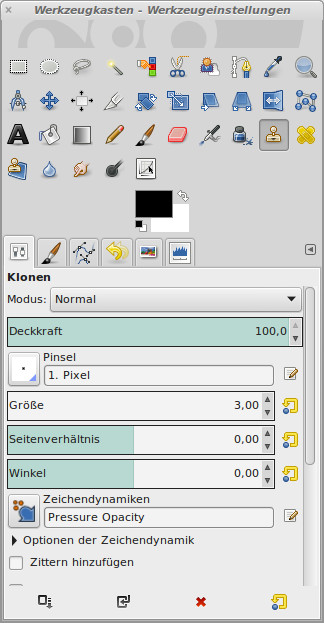

Das Retouche-Werkzeug
Im Werkzeugkasten befindet sich auch ein Werkzeug, mit dem man
Bildelemente klonen kann. Damit lassen sich störende Bildelemente
entfernen. Hier sind noch einige Stromleitungen zu sehen:

|
Abb.
1: Deutlich zu erkennen sind die Stromleitungen
|

|
Abb.
2: Das Klonwerkzeug
|
Zum Klonen sind Bildelemente zu wählen, die möglichst nahe am zu
übermalenden Bereich liegen, um Farbabweichungen so gering wie möglich
zu halten.

|
Abb.
3: Die Leitungen wurden wegretouchiert
|
So sieht das fertig manipulierte Bild aus. Bei einer guten Manipulation
wäre der Turm noch zu verkleinern um die Größenverhältnisse noch besser
zu berücksichtigen, aber hier geht es darum, die Technik vorzustellen.

|
Abb.
4: Nochmals das fertige manipulierte Bild
|
© 2009-2017 Michael Roppel